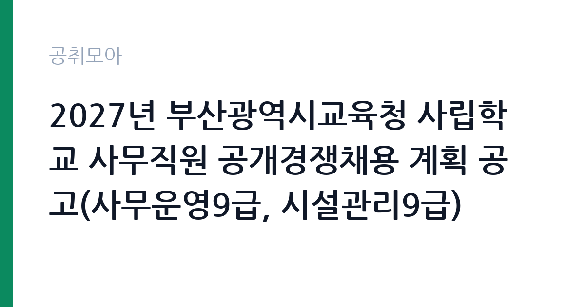

[교육청] 2027년 부산광역시교육청 사립학교 사무직원 공개경쟁채용 계획 공고(사무운영9급, 시설관리9급)
부산광역시교육청 · 부산 · 마감 2026-11-11 (D-21) · 출처 나라일터

한눈에 보는 모집 조건
| 기관 | 부산광역시교육청 |
|---|---|
| 공고명 | 2027년 부산광역시교육청 사립학교 사무직원 공개경쟁채용 계획 공고(사무운영9급, 시설관리9급) |
| 고용형태 | 정규직 |
| 근무지 | 부산 |
| 게시일 | 2026-10-21 |
| 마감일 | 2026-11-11 (D-21) |
지원자격, 이렇게 읽으세요
- 9급 11명
- 접수 ~2026-11-11 마감
- 세부 조건은 원문 공고문 확인
정규직 채용은 기간의 정함이 없는 근로계약을 전제로 합니다. 수습 기간을 두고 평가한 뒤 정규직으로 확정하는 절차가 일반적이며 기관의 인사 규정과 임금 체계를 적용받습니다. 이번 공고는 부산광역시교육청에서 직접 진행하는 자체 전형으로, 응시자격과 제출서류는 공고문에 항목별로 제시됩니다. 시설 관리 직무는 관련 자격이나 경력을 우대하는 경우가 많습니다. 전기기능사나 설비보수, 소방설비 관련 자격이 있으면 유리하고 일부 공고는 자격을 필수로 요구합니다. 운전면허와 교대 근무 가능 여부도 자주 확인하는 항목입니다. 시설 규모가 큰 기관은 담당 구역이 나뉘어 있어 구체적인 업무 범위를 공고문에서 확인해야 합니다. 국가공무원법상 결격사유와 신체 조건 확인 절차가 있습니다. 서류는 접수 마감 이후 보완이 되지 않으므로 자격 요건과 증빙 서류를 마감 전에 모두 갖춰야 합니다. 공고문에 명시된 우대 사항은 해당 여부를 확인해 증빙을 첨부해야 가점이 반영됩니다. 동일 직무 경력자와 경쟁하게 되므로, 관련 경험이 있다면 증명서에 업무 내용이 구체적으로 적히도록 요청하십시오.
이 공고의 포인트
이 공고의 첫 번째 포인트는 고용 형태입니다. 수습 기간 평가를 통과하면 기간의 정함이 없는 신분이 되어 고용이 안정됩니다. 두 번째는 업무 범위가 명확하다는 점입니다. 시설 관리·경비 직무로 채용되므로 배치 이후 담당 업무가 크게 흔들리지 않습니다. 세 번째는 근무지입니다. 부산 지역 근무로 수도권 공고에 비해 지원자 분포가 넓지 않아 상대적으로 경쟁이 분산되는 경우가 있습니다. 채용 규모가 크지 않아 면접 비중이 높은 전형이 될 가능성이 있습니다. 같은 직무로 함께 올라온 공고 가운데 접수 마감이 가장 늦은 편이라 준비 시간을 상대적으로 확보할 수 있습니다. 다만 선발 인원이 11명으로 많지 않아 자격을 갖춘 지원자가 몰리면 경쟁률이 높아질 수 있습니다.
전형은 어떻게 진행되나
전형은 서류심사와 면접심사를 기본으로 하고 직무에 따라 필기나 실기, 체력검정이 추가됩니다. 서류 단계에서는 응시자격 충족 여부와 제출서류 형식을 확인하며 이 단계에서 탈락하는 지원자가 적지 않습니다. 면접은 직무 이해도와 경험을 확인하는 방식으로 진행되고 발표는 개별 통보나 홈페이지 게시로 이뤄집니다. 최종합격 이후에는 결격사유 조회와 채용 신체검사가 이어지며 이 절차에서 문제가 확인되면 합격이 취소될 수 있습니다. 구체적인 전형 단계와 배점은 공고문에 표로 정리되어 있으니 원문을 기준으로 준비하십시오. 전형 일정이 공고문에 날짜로 명시되어 있으니 달력에 옮겨 두고 준비하십시오.
원문에서 확인한 전형 방식
○ 모집분야 : 사무운영, 시설관리 ○ 선발직급 : 9급 ○ 고용형태 : 정규직 ○ 자격요건 : 공고문 참조 ○ 접수기간 - 우편접수: 2026.11.5.(목) ~ 2026.11.11.(수) 16:00(마감시간까지 도착한 서류만 인정) - 방문접수: 2026.11.11.(수) 09:30 ~ 16:00(하루만 진행함) ○ 문의처 : 각 법인별 채용담당자(공고문 참조)
이런 분께 추천해요
- 시설·설비 점검 경력이나 관련 자격을 가진 분
- 교대·야간 근무와 비상 출동에 응할 수 있는 분
- 안전 점검 기록을 성실히 관리하는 분
지원 전 체크리스트
- 응시자격 요건과 경력 기준을 충족하는가 — 경력은 증명서로 입증해야 합니다
- 수습 기간과 정규직 전환 조건을 확인했는가
- 제출서류 목록을 모두 준비했는가 — 누락 시 서류 단계에서 탈락합니다
- 접수 마감 2026-11-11 이전에 접수 방식을 확인해 제출했는가
모집 일정과 제출 타이밍
접수 마감은 2026-11-11이고 공고는 2026-10-21에 게시되었습니다. 준비 기간 21일 안에 서류 작성, 증빙 발급, 접수를 모두 마쳐야 하므로 주말을 포함해 일정을 미리 나누는 것이 좋습니다. 특히 경력 기술서나 직무수행계획서를 요구하는 공고는 작성에 시간이 걸리므로 첫날 초안을 잡으십시오. 서류 합격자 발표와 면접 사이 간격이 짧은 경우가 많아 면접 예상 질문은 서류 제출 전에 정리해 두는 편이 유리합니다. 마감 직전에는 접속이 몰리므로 여유를 두고 제출하십시오. 제출 서류는 공고문에 적힌 순서대로 정리하면 담당자가 확인하기 쉬워 누락이 줄어듭니다. 부산 근무지는 지역 안에서도 이동 시간이 길어 근무지 위치를 구체적으로 확인하는 것이 좋습니다. 마감까지 여유가 있어 자격 요건을 천천히 확인하고 준비할 수 있습니다. 선발 인원이 한 자릿수를 넘어 서류와 면접 점수를 함께 관리하는 전략이 필요합니다.
직무 이해하기: 교육청
교육기관은 학교 교육과 교원 연수, 교육 행정을 담당합니다. 교육청은 관내 학교를 지원하고, 대학은 학사와 연구, 학생 지원 업무를 운영합니다. 예산과 인사 규정이 교육부 지침과 자체 규정을 함께 따르므로 절차가 엄격합니다. 시설 관리 업무는 건물과 설비가 정상 작동하도록 점검하고 고장을 처리하는 일입니다. 전기·수도·냉난방 설비의 작동 상태를 확인하고, 이상이 있으면 정비를 요청하거나 직접 보수합니다. 출입 통제와 순찰, 방문자 안내, 주차 관리가 함께 붙는 경우도 많습니다. 야간이나 휴일에 비상 연락을 받고 출동하는 체계가 운영되므로 교대 근무가 포함될 수 있습니다. 시설 안전 점검 기록을 남기는 것도 중요한 업무입니다. 업무는 혼자 처리하기보다 부서 단위로 나눠 진행되므로 담당 구역과 협업 범위를 입사 초에 확인하는 것이 중요합니다. 업무 강도와 근무 시간대는 부서 배치에 따라 달라지므로 면접에서 확인하는 것이 가장 정확합니다.
자기소개서 작성 팁
시설 관리 지원서는 고장을 예방한 경험과 안전 의식을 보여주는 것이 핵심입니다. 정기 점검표를 만들어 운영한 경험, 위험 요소를 발견해 조치한 사례를 구체적으로 쓰십시오. 자격과 경력은 서류에 드러나므로 자소서에서는 판단 과정과 협업 방식을 서술하는 편이 좋습니다. 장기 근무 의사와 교대 근무 수용 여부를 분명히 밝히십시오. 직무 경험이 많지 않다면 경험의 양보다 과정을 구체적으로 쓰는 편이 낫습니다. 어떤 상황에서 무엇을 판단했고 어떤 결과가 나왔는지 순서대로 서술하면 신뢰가 생깁니다. 지원 동기와 기여 방안은 한 문단씩 짧게 유지하고, 가장 자신 있는 경험에 분량을 몰아주십시오. 마지막 문장은 포부보다 구체적인 실행 계획으로 끝내는 것이 좋습니다.
면접 준비 포인트
면접에서는 돌발 상황 대응과 협업 태도를 봅니다. 누수가 발생했을 때 첫 조치가 무엇인지, 시설 고장 신고가 여러 건 겹칠 때 우선순위를 어떻게 정할지 묻습니다. 안전 점검 기록을 어떻게 관리해왔는지 구체적으로 답하십시오. 교대 근무와 야간 대응 가능 여부도 반드시 확인합니다. 답변은 상황, 판단, 조치의 순서로 정리하면 전달이 분명해집니다. 모르는 질문에는 모른다고 밝히고 확인 방법을 제시하는 편이 억지 답변보다 낫습니다. 마지막에는 근무 의사와 함께 2026-11-11 이후 일정에 언제든 응할 수 있다는 점을 전달하십시오. 지원 기관의 최근 사업이나 조직 개편 내용을 확인해 두면 지원 동기 질문에서 차이가 납니다.
급여·근무조건 읽는 법
시설 관리 직무의 보수는 무기계약직 또는 공무직 임금표에 따라 기본급과 수당으로 구성됩니다. 자격 수당과 교대 근무에 따른 야간·휴일 수당이 붙는 경우가 있어 기본급만으로 비교하기 어렵습니다. 2026년 최저임금은 시급 10,320원, 월 환산 2,156,880원(209시간 기준)이며, 교대 근무자는 근무표에 따라 실수령액이 달라집니다. 정확한 금액과 수당 항목은 공고문 처우표에서 확인하십시오. 무기계약이면 정년까지 근무가 가능해 장기 소득 안정성이 큽니다. 2026년 적용 최저임금은 시급 10,320원, 월 환산 2,156,880원(주 40시간·209시간 기준)입니다. 고용노동부 고시 제2025-47호로 확정된 금액입니다. 보수는 보통 기본급, 각종 수당, 상여로 나뉘어 지급됩니다. 기본급만 보면 적어 보여도 정액급식비와 명절휴가비, 복지포인트가 붙으면 실제 총액이 달라지므로 항목별로 확인해야 합니다. 4대 보험과 퇴직급여 적용 여부도 함께 보십시오. 기간제는 계약 기간이 짧아 월 급여가 높아도 연간 총액은 적을 수 있습니다.
자주 묻는 질문
- 선발 인원은 몇 명인가요?
공고문 기준 11명입니다. 직종별로 인원이 나뉘는 경우가 있으니 모집분야 항목을 함께 확인하십시오. - 근무지는 어디인가요?
부산 지역의 부산광역시교육청 소속 근무지입니다. 세부 주소와 출퇴근 조건은 원문 공고문에서 확인할 수 있습니다. - 보수는 얼마인가요?
채용 신분(정규직)과 기관 임금 규정에 따라 정해지며 구체적인 금액은 공고문 처우 항목에 제시됩니다. 금액이 공개되지 않은 경우에는 원문의 보수표를 확인하십시오.
함께 보면 좋은 공고
[교육청] 2026학년도 인천아라고등학교 계약제(기간제) 교사 공고(영어) — 마감 2026-10-25[교육청] 2026년도 제6회 인천광역시교육청 한시임기제공무원 경력경쟁임용시험 시행계획 공고 — 마감 2026-11-04[교육청] 2026년도 제6회 인천광역시교육청 일반임기제공무원 경력경쟁임용시험 시행계획 공고 — 마감 2026-11-04출처: 나라일터 공개정보를 바탕으로 공취모아가 정리한 안내글입니다. 모집 조건·일정은 변경될 수 있으니 지원 전 반드시 원문 공고문을 확인하세요. 본 글은 정보 제공용이며 합격을 보장하지 않습니다.